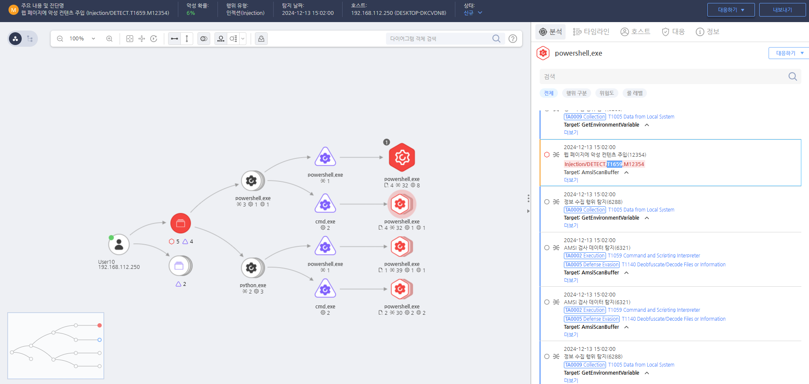

T1659.000.01 웹 메인 페이지에 악성 스크립트 삽입
D3FEND
MITRE ATT&CK 액션을 기준으로 대응 방안을 작성
Detection
모니터링을 통해 웹페이지에 공격자 주소로 이동될 수 있는 'window.location.assign' 함수가 존재하는지 확인한다.
Detection(EDR)

https://172.18.10.125:8903/#/analysis/incident/675bce48002dc79600000a3f
Response
방화벽 규칙을 설정하여 공격자 IP를 차단합니다.
Mitigations
로그 무결성 보호
- 로그 파일 및 이벤트 로그에 대한 무결성 검사를 수행합니다.
- 중앙 집중식 로그 관리 시스템(SIEM)에서 실시간 모니터링 및 백업을 유지합니다.
보안 솔루션 강화
- EDR/XDR 솔루션을 사용하여 비정상적인 로그 삭제 또는 비활성화를 탐지합니다.
- 보안 소프트웨어의 설정을 변경하지 못하도록 보호(예: Tamper Protection 활성화)합니다.
이벤트 로깅 및 감사 정책 강화
- 중요한 보안 이벤트(예: Windows Event Log, Sysmon 로그)의 삭제 시도를 모니터링합니다.
- 로그 삭제 및 조작 시 경고를 생성하도록 SIEM에서 룰을 설정합니다.
권한 제어
- 보안 로그를 수정할 수 있는 관리자 권한을 제한합니다.
- 시스템 서비스 및 프로세스의 무단 변경을 방지하기 위해 Application Whitelisting을 적용합니다.
레지스트리 및 시스템 설정 보호
- 이벤트 로깅 비활성화를 시도하는 레지스트리 변경 감지 및 차단(Group Policy 활용).
- WMI, PowerShell을 통한 로그 무력화 시도를 탐지하는 룰 적용.
네트워크 트래픽 모니터링
- C2 통신을 차단하기 위한 DNS/네트워크 보안 정책을 적용합니다.
- 네트워크 보안 장비에서 의심스러운 로그 삭제 명령을 탐지하고 대응합니다.
Affected Techniques
Action 실행시 함께 영향을 받는 다른 Techniqes
| D3FEND |
| D3-UA URL Analysis |
| D3-DNRA Domain Name Reputation Analysis |